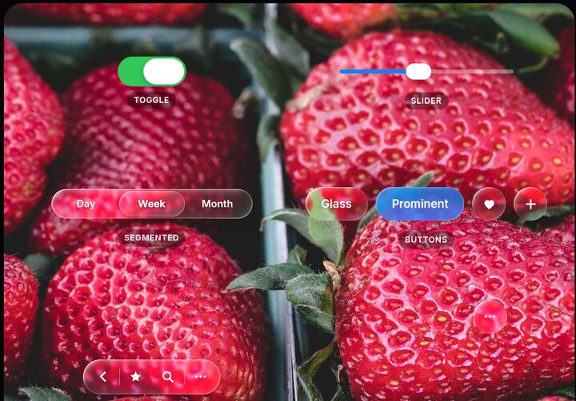
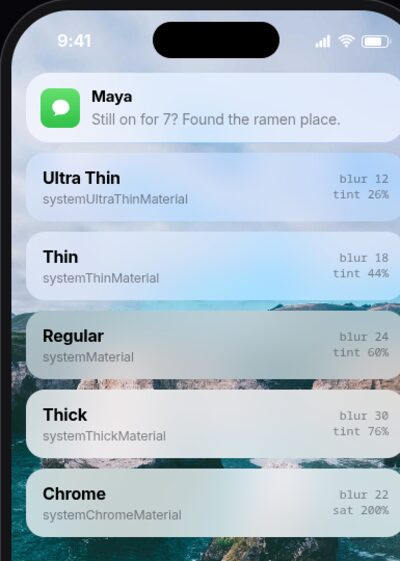

Physically based
Squircle rim, index of refraction, magnification and chromatic dispersion, computed per pixel.
Open source · Zero dependencies · MIT
Real refraction computed with Snell's law, specular rims that follow the light, and iOS 26-style glass components, in ~30 KB of vanilla JavaScript.
npm install @sasivisvan/glass-morphism
Why it's different
Most "glassmorphism" frosts the background. Apple's Liquid Glass refracts it: the curved rim bends what's behind it while the centre stays clear. This library does the optics.
Squircle rim, index of refraction, magnification and chromatic dispersion, computed per pixel.
Specular rims follow the pointer, or device tilt on phones, just like on iPhone.
Buttons, switches, sliders, segmented controls, tab bars, toolbars and morphing menus.
Any string becomes a lens, like the iOS 26 lock screen clock.
Frosted fallback in Firefox and Safari, real inputs underneath, and support for reduced transparency and motion.
No dependencies. UMD, ES modules and TypeScript types. A WebGL renderer when you need every browser.
Playground
Pick a preset, adjust the optics, and copy the code. The controls are the library's own components.
Components
Plain HTML plus LiquidGlass.init(). Press and hold: thumbs turn into magnifying lenses, selections become droplets.
<button class="lg-button">Glass</button>
<button class="lg-button lg-button--prominent">…</button><label class="lg-switch">
<input type="checkbox" checked>
</label><div class="lg-slider">
<input type="range" value="40">
</div><div class="lg-segmented">
<button>Day</button>
<button aria-pressed="true">Week</button>
</div><nav class="lg-tabbar">
<a class="lg-tabbar__item" aria-current="page">…</a>
</nav><div class="lg-menu">
<button class="lg-menu__trigger">…</button>
<div class="lg-menu__panel">…</div>
</div>Recreations
Each demo has several attempts you can flip between to compare techniques, from plain CSS blur to WebGL.




Get started